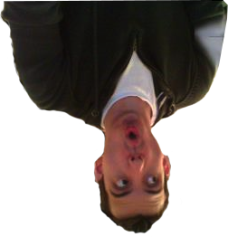
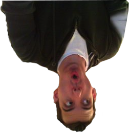

Zum ersten Mal dürfen wir, die Fachschaften Informatik und Mathematik,
das Wintersemester mit euch gebührend begrüßen.
Los geht’s am 24.10. um 21 Uhr im Foyer 46.
Die Willkommen im Busch ist traditionell die erste Fete im Wintersemester und wurde bisher stets vom AStA ausgerichtet. Dieses Semester haben wir nun die Ehre euch so zu begrüßen, wie es sich gehört. Für euch haben wir eine Menge auf Lager:
Zur Orientierung hier ein Aufbauplan.
Wir haben jede Menge Longdrinks und Bier sowie leckere Cocktails und Wein für euch in petto.
Erstmals bieten wir euch eine exklusive Lounge im Außenbereich mit frisch gemixten Cocktails vom Feinsten, Dannemann, gemütlicher Livemusik in einem dekadenten Ambiente! Natürlich wird die Lounge beheizt und ist trocken, sodass keiner frieren muss.
Wie immer gibt es unsere berühmten Crêpes für zwischendurch.
Für den großen Hunger haben wir Imbiss Boll eingeladen, der euch mit der Laut'rer Spezialität dem "Bollburger" und anderen Delikatessen versorgt.
Und damit ihr gut nach Hause kommt, fahren Nachtbusse: